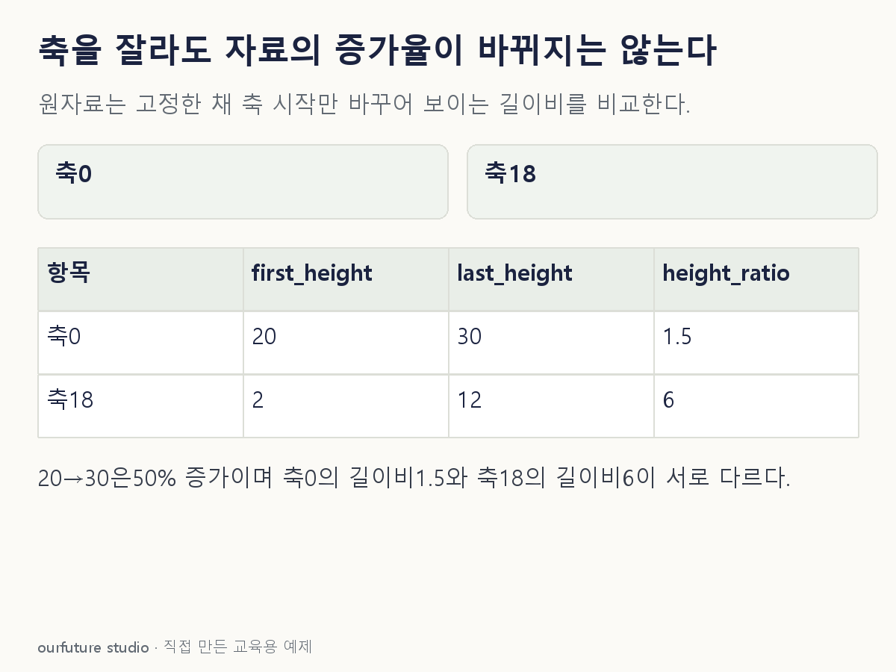

조건을 바꾸며 확인하기
원자료20·30을 고정한 자체 막대 길이 산술이다. 시각적 인상 변화가 데이터의 변화는 아니다.
설명 그림과 비교하기
아래 그림과 표는 고정된 설명 예제입니다. 기본·변형 중 어떤 조건인지 캡션을 읽고, 바꾼 입력의 결과는 계산 칸에서 확인하세요.

같은 문제를 직접 골라 보기
같은 단위의 통계값이 20→30으로 증가했다. 막대의 축은 18부터 시작해 보이는 높이가 2→12가 됐다.
조건을 더 바꾸면?
같은 수치가 전체 중 비율 20%→30%를 뜻한다면 퍼센트포인트 변화와 상대 증가율은?
변형 풀이 확인
10퍼센트포인트, 상대 증가율 50%다.
30%−20%=10퍼센트포인트이고, 그 차이를 이전 비율 20%로 나누면 50%다. 변화량과 변화비율은 분모가 다른 설명이다.
눈에 보인 길이 말고, 원자료의 분모.